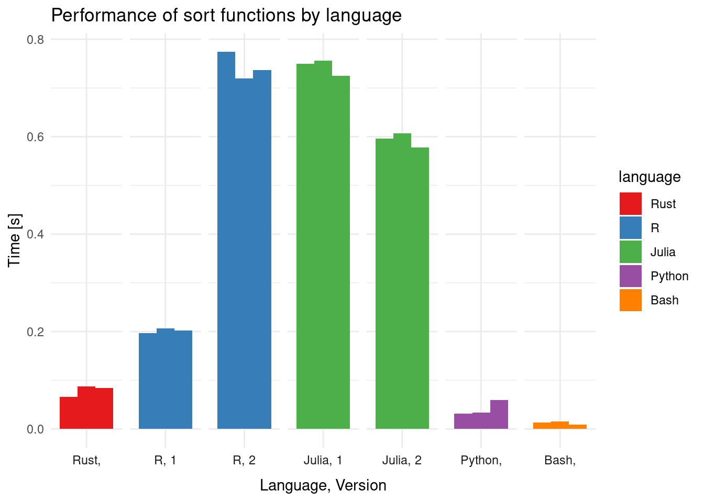

I’ve had the impression lately that everyone is learning Rust and there’s plenty of great material out there to make that easier. {gifski} is perhaps the most well-known example of an R package wrapping a Rust Cargo crate. I don’t really know any system language particularly well, so I figured I’d wade into it and see what it’s like.
I’ve had the impression lately that everyone is learning Rust and there’s plenty of great material out there to make that easier. {gifski} is perhaps the most well-known example of an R package wrapping a Rust Cargo crate. I don’t really know any system language particularly well, so I figured I’d wade into it and see what it’s like.
The big advantages I’ve heard are that it’s more modern than C++, is “safe” (in the sense that you can’t compile something that tries to read out of bounds memory), and it’s super fast (it’s a compiled, strictly-typed language, so one would hope so).
I had a browse through some beginner material, and watched some videos on Youtube. Just enough to have some understanding of the syntax and keywords so I could actually search for things once I inevitably hit problems.
Getting everything up and running went surprisingly smoothly. Installing the toolchain went okay on my Linux (Pop!_OS) machine, and the getting started guide was straightforward enough to follow along with. I soon enough had Ferris welcoming me to the world of Rust
----------------------------
< Hello fellow Rustaceans! >
----------------------------
\
\
_~^~^~_
\) / o o \ (/
'_ - _'
/ '-----' \Visual Studio Code works nicely as a multi-language editor, and while it’s great to have errors visible to you immediately, I can imagine that gets annoying pretty quick (especially if you write as much bad Rust code as I do).
Next I needed to actually code something up myself. I love small, silly problems for learning - you don’t know exactly what problems you’ll solve along the way. This one ended up being really helpful.
I had this tweet
This week I’ve been posting #Python 🐍 quizzes about sorting.
— David Amos (@somacdivad) September 16, 2022
Let’s see if you can put everything together and solve a challenge! 💪#CuriousAboutCode pic.twitter.com/ht51eA3Ttj
in my bookmarks because I wanted to try to solve this with R (naturally) but I decided it was a reasonable candidate for trying to solve a problem and learn some language at the same time, so I decided to give it a go with Rust. This is slightly more complicated than an academic “sort some strings” because it’s “natural sorting” (2 before 10) and has a complicating character in the middle.
The first step was to get Rust to read in and just print back the ‘data’ (strings). I managed to copy some “print a vector of strings” code and got that working. I’ll figure out later what’s going with the format string here
println!("{:?}", x);After that, I battled errors in converting between String, &str, and i32 types; returning a Result (error) rather than a value; dealing with obscure errors (“cannot move out of borrowed content”, “expected named lifetime parameter” - ???); and a lack of method support for a struct I just created (which didn’t have any inherited ‘type’). All in all, nothing too surprising given I know approximately 0 Rust, but I got there in the end!
Now, this won’t be anything “good”, but it does compile and appears to give the right answer, so I’m led to believe that means it’s “right”.
// enable printing of the struct
#[derive(Debug)]
// create a struct with a String and an integer
// not using &str due to lifetime issues
struct Pair {
x: String,
y: i32
}
fn main() {
// input data vector
let v = vec!["aa-2", "ab-100", "aa-10", "ba-25", "ab-3"];
// create an accumulating vector of `Pair`s
let mut res: Vec<Pair> = vec![];
// for each string, split at '-',
// convert the first part to String and the second to integer.
// then push onto the accumulator
for s in v {
let a: Vec<&str> = s.split("-").collect();
let tmp_pair = Pair {x: a[0].to_string(), y: a[1].parse::<i32>().unwrap() };
res.push(tmp_pair);
}
// sort by Pair.x then Pair.y
res.sort_by_key(|k| (k.x.clone(), k.y.clone()));
// start building a new vector for the final result
let mut res2: Vec<String> = vec![];
// paste together Pair.x, '-', and Pair.y (as String)
for s2 in res {
res2.push(s2.x + "-" + &s2.y.to_string());
}
// ["aa-2", "aa-10", "ab-3", "ab-100", "ba-25"]
println!("{:?}", res2);
}Running
cargo run --releaseproduces the expected output
["aa-2", "aa-10", "ab-3", "ab-100", "ba-25"]Feel free to suggest anything that could be improved, I’m sure there’s plenty.
That might have been an okay place to stop, but I did still want to see if I could solve the problem with R, and how that might compare (in approach, readability, and speed), so I coded that up as
# input vector
s <- c("aa-2", "ab-100", "aa-10", "ba-25", "ab-3")
# split into pairs of strings
x <- strsplit(s, "-")
# take elements of s sorted by the first elements of x then
# the second (as integers)
s[order(sapply(x, `[[`, 1), as.integer(sapply(x, `[[`, 2)))]## [1] "aa-2" "aa-10" "ab-3" "ab-100" "ba-25"I don’t love that I had to use sapply() twice, but the only other alternative I could think of was to strip out the first and second element lists and use those in a do.call()
s[do.call(order, list(unlist(x)[c(T, F)], as.integer(unlist(x)[c(F,T)])))]## [1] "aa-2" "aa-10" "ab-3" "ab-100" "ba-25"which… isn’t better.
I also had an idea to shoehorn dplyr::arrange() into this, but that requires a data.frame. One idea I had was to read in the data, using "-" as a delimiter, explicitly stating that I wanted to read it as character and integer data. That seemed to work, which means I can try what I hoped
suppressMessages(library(dplyr, quietly = TRUE))
# input vector
s <- c("aa-2", "ab-100", "aa-10", "ba-25", "ab-3")
# read strings as fields delimited by '-',
# expecting character and integer
s %>% read.delim(
text = .,
sep = "-",
header = FALSE,
colClasses = c("character", "integer")
) %>%
# sort by first then second column
arrange(V1, V2) %>%
# collapse to single string per row
mutate(res = paste(V1, V2, sep = "-")) %>%
pull()## [1] "aa-2" "aa-10" "ab-3" "ab-100" "ba-25"Why stop there? I know other languages! Okay, the Python and Julia examples I found in other Tweets.
In Julia, two options were offered. This one
strings = String["aa-2", "ab-100", "aa-10", "ba-25", "ab-3"];
print(join.(sort(split.(strings, "-"), by = x -> (x[1], parse(Int, x[2]))), "-"))## ["aa-2", "aa-10", "ab-3", "ab-100", "ba-25"](I added a type to the input and an explicit print), and this one
strings = String["aa-2", "ab-100", "aa-10", "ba-25", "ab-3"];
print(sort(strings, by = x->split(x, "-") |> v->(v[1], parse(Int, v[2]))))## ["aa-2", "aa-10", "ab-3", "ab-100", "ba-25"]The Python example offered by the original author of the challenge was
def parts(s):
letters, nums = s.split("-")
return letters, int(nums)
strings = ["aa-2", "ab-100", "aa-10", "ba-25", "ab-3"]
print(sorted(strings, key=parts))## ['aa-2', 'aa-10', 'ab-3', 'ab-100', 'ba-25']I actually really like this one - it’s the approach I wanted to use for R; provide sort with a function returning the keys to use. Alas.
Lastly, I remembered that there’s a sort function in bash that can do natural sorting with the -V flag. I’m reminded of this anecdote (“More shell, less egg”) about using a very simple bash script when it’s possible. That came together okay
#!/bin/bash
v=("aa-2" "ab-100" "aa-10" "ba-25" "ab-3")
readarray -t a_out < <(printf '%s\n' "${v[@]}" | sort -V)
printf '%s ' "${a_out[@]}"
echo
exit 0## aa-2 aa-10 ab-3 ab-100 ba-25By the way, aside from the Rust example, all of these were run directly in the Rmd source of this post with knitr’s powerful engines… multi-language support FTW!
So, how do all these compare? I haven’t tuned any of these for performance; they’re how I would have written them as a developer trying to achieve something. Sure, if performance was an issue, I’d do some optimization, but I was curious just how the performance compares ‘out of the box’.
Mainly for my own posterity, I’ll add how I tracked this. I wrote the relevant code for each language in a file with suffix/filetype appropriate to each language. They’re all here, in case anyone is interested. Then I wanted to run each of them a few times, keeping track of the timing in a file. The solution I went with was to echo into a file (appending each time) both the input and output, with e.g.
echo "Rust (optimised/release)" >> timing
{time cargo run --release} >> timing 2>&1
{time cargo run --release} >> timing 2>&1
{time cargo run --release} >> timing 2>&1(yes, trivial to loop 3 times, but whatever).
Doing this for all the languages (with both versions for R and Julia) I get
Rust (optimized/release)
Finished release [optimized] target(s) in 0.00s
Running `target/release/sort`
["aa-2", "aa-10", "ab-3", "ab-100", "ba-25"]
cargo run --release 0.04s user 0.02s system 99% cpu 0.066 total
Finished release [optimized] target(s) in 0.00s
Running `target/release/sort`
["aa-2", "aa-10", "ab-3", "ab-100", "ba-25"]
cargo run --release 0.07s user 0.01s system 99% cpu 0.087 total
Finished release [optimized] target(s) in 0.00s
Running `target/release/sort`
["aa-2", "aa-10", "ab-3", "ab-100", "ba-25"]
cargo run --release 0.06s user 0.02s system 98% cpu 0.084 total
R1
[1] "aa-2" "aa-10" "ab-3" "ab-100" "ba-25"
Rscript sort1.R 0.15s user 0.05s system 102% cpu 0.197 total
[1] "aa-2" "aa-10" "ab-3" "ab-100" "ba-25"
Rscript sort1.R 0.17s user 0.05s system 102% cpu 0.206 total
[1] "aa-2" "aa-10" "ab-3" "ab-100" "ba-25"
Rscript sort1.R 0.16s user 0.05s system 103% cpu 0.202 total
R2
[1] "aa-2" "aa-10" "ab-3" "ab-100" "ba-25"
Rscript sort2.R 0.72s user 0.05s system 100% cpu 0.774 total
[1] "aa-2" "aa-10" "ab-3" "ab-100" "ba-25"
Rscript sort2.R 0.67s user 0.06s system 100% cpu 0.720 total
[1] "aa-2" "aa-10" "ab-3" "ab-100" "ba-25"
Rscript sort2.R 0.69s user 0.04s system 99% cpu 0.737 total
Python
['aa-2', 'aa-10', 'ab-3', 'ab-100', 'ba-25']
python3 sort.py 0.03s user 0.00s system 98% cpu 0.032 total
['aa-2', 'aa-10', 'ab-3', 'ab-100', 'ba-25']
python3 sort.py 0.02s user 0.01s system 98% cpu 0.034 total
['aa-2', 'aa-10', 'ab-3', 'ab-100', 'ba-25']
python3 sort.py 0.03s user 0.02s system 98% cpu 0.059 total
Julia1
["aa-2", "aa-10", "ab-3", "ab-100", "ba-25"]
julia sort1.jl 1.10s user 0.68s system 236% cpu 0.750 total
["aa-2", "aa-10", "ab-3", "ab-100", "ba-25"]
julia sort1.jl 1.14s user 0.64s system 233% cpu 0.765 total
["aa-2", "aa-10", "ab-3", "ab-100", "ba-25"]
julia sort1.jl 1.13s user 0.62s system 241% cpu 0.725 total
Julia2
["aa-2", "aa-10", "ab-3", "ab-100", "ba-25"]
julia sort2.jl 0.97s user 0.64s system 270% cpu 0.596 total
["aa-2", "aa-10", "ab-3", "ab-100", "ba-25"]
julia sort2.jl 1.00s user 0.58s system 259% cpu 0.607 total
["aa-2", "aa-10", "ab-3", "ab-100", "ba-25"]
julia sort2.jl 0.96s user 0.63s system 276% cpu 0.578 total
Bash
aa-2 aa-10 ab-3 ab-100 ba-25
./sort.sh 0.01s user 0.00s system 109% cpu 0.013 total
aa-2 aa-10 ab-3 ab-100 ba-25
./sort.sh 0.00s user 0.01s system 108% cpu 0.015 total
aa-2 aa-10 ab-3 ab-100 ba-25
./sort.sh 0.01s user 0.00s system 99% cpu 0.009 totalThis wouldn’t be much of a coding/benchmark post without a plot, so I also did a visual comparison
library(ggplot2)
d <- tibble::tribble(
~language, ~version, ~run, ~time,
"Rust", "", 1, 0.066,
"Rust", "", 2, 0.087,
"Rust", "", 3, 0.084,
"R", "1", 1, 0.197,
"R", "1", 2, 0.206,
"R", "1", 3, 0.202,
"R", "2", 1, 0.774,
"R", "2", 2, 0.720,
"R", "2", 3, 0.737,
"Julia", "1", 1, 0.750,
"Julia", "1", 2, 0.756,
"Julia", "1", 3, 0.725,
"Julia", "2", 1, 0.596,
"Julia", "2", 2, 0.607,
"Julia", "2", 3, 0.578,
"Python", "", 1, 0.032,
"Python", "", 2, 0.034,
"Python", "", 3, 0.059,
"Bash", "", 1, 0.013,
"Bash", "", 2, 0.015,
"Bash", "", 3, 0.009
)
d$language <- factor(
d$language,
levels = c("Rust", "R", "Julia", "Python", "Bash")
)
ggplot(d, aes(language, time, fill = language, group = run)) +
geom_col(position = position_dodge(0.9)) +
facet_grid(
~language + version,
scales = "free_x",
labeller = label_wrap_gen(multi_line = FALSE),
switch = "x"
) +
theme_minimal() +
theme(axis.text.x = element_blank()) +
labs(
title = "Performance of sort functions by language",
y = "Time [s]",
x = "Language, Version"
) +
scale_fill_brewer(palette = "Set1")
It’s true - Rust does pretty well, even with my terrible coding. My R implementation (the sensible one) isn’t too bad - perhaps over many strings it would be a bit slow. Surprisingly, the Julia implementations are actually quite slow. I don’t have a good explanation for that. I’m using Julia 1.5.0 which is slightly out of date, so perhaps that needs an update. The Python implementation does particularly well - I really should learn more python. The syntax there isn’t the worst, either. Oh, no - do I like that?
The big winner, though, is the simplest of all - Bash crushes the rest of the languages with a 2 liner, and calling it doesn’t involve compiling anything.
As I said, I’m not particularly interested in optimizing any of these - this is how they compare as written.
In summary, I learned some Rust - enough to actually manipulate some data. I’ll keep trying and hopefully some day I’ll be semi literate in it.
## ─ Session info ───────────────────────────────────────────────────────────────
## setting value
## version R version 4.1.2 (2021-11-01)
## os Pop!_OS 22.04 LTS
## system x86_64, linux-gnu
## ui X11
## language (EN)
## collate en_AU.UTF-8
## ctype en_AU.UTF-8
## tz Australia/Adelaide
## date 2023-06-17
## pandoc 3.1.1 @ /usr/lib/rstudio/resources/app/bin/quarto/bin/tools/ (via rmarkdown)
##
## ─ Packages ───────────────────────────────────────────────────────────────────
## package * version date (UTC) lib source
## assertthat 0.2.1 2019-03-21 [3] CRAN (R 4.0.1)
## blogdown 1.17 2023-05-16 [1] CRAN (R 4.1.2)
## bookdown 0.29 2022-09-12 [1] CRAN (R 4.1.2)
## bslib 0.4.1 2022-11-02 [3] CRAN (R 4.2.2)
## cachem 1.0.6 2021-08-19 [3] CRAN (R 4.2.0)
## callr 3.7.3 2022-11-02 [3] CRAN (R 4.2.2)
## cli 3.4.1 2022-09-23 [3] CRAN (R 4.2.1)
## colorspace 2.0-3 2022-02-21 [3] CRAN (R 4.2.0)
## crayon 1.5.2 2022-09-29 [3] CRAN (R 4.2.1)
## DBI 1.1.3 2022-06-18 [3] CRAN (R 4.2.1)
## devtools 2.4.5 2022-10-11 [1] CRAN (R 4.1.2)
## digest 0.6.30 2022-10-18 [3] CRAN (R 4.2.1)
## dplyr * 1.0.10 2022-09-01 [3] CRAN (R 4.2.1)
## ellipsis 0.3.2 2021-04-29 [3] CRAN (R 4.1.1)
## evaluate 0.18 2022-11-07 [3] CRAN (R 4.2.2)
## fansi 1.0.3 2022-03-24 [3] CRAN (R 4.2.0)
## farver 2.1.1 2022-07-06 [3] CRAN (R 4.2.1)
## fastmap 1.1.0 2021-01-25 [3] CRAN (R 4.2.0)
## fs 1.5.2 2021-12-08 [3] CRAN (R 4.1.2)
## generics 0.1.3 2022-07-05 [3] CRAN (R 4.2.1)
## ggplot2 * 3.4.1 2023-02-10 [1] CRAN (R 4.1.2)
## glue 1.6.2 2022-02-24 [3] CRAN (R 4.2.0)
## gtable 0.3.1 2022-09-01 [3] CRAN (R 4.2.1)
## here 1.0.1 2020-12-13 [1] CRAN (R 4.1.2)
## highr 0.9 2021-04-16 [3] CRAN (R 4.1.1)
## htmltools 0.5.3 2022-07-18 [3] CRAN (R 4.2.1)
## htmlwidgets 1.5.4 2021-09-08 [1] CRAN (R 4.1.2)
## httpuv 1.6.6 2022-09-08 [1] CRAN (R 4.1.2)
## jquerylib 0.1.4 2021-04-26 [3] CRAN (R 4.1.2)
## jsonlite 1.8.3 2022-10-21 [3] CRAN (R 4.2.1)
## JuliaCall 0.17.5 2022-09-08 [1] CRAN (R 4.1.2)
## knitr 1.40 2022-08-24 [3] CRAN (R 4.2.1)
## labeling 0.4.2 2020-10-20 [3] CRAN (R 4.2.0)
## later 1.3.0 2021-08-18 [1] CRAN (R 4.1.2)
## lattice 0.20-45 2021-09-22 [4] CRAN (R 4.2.0)
## lifecycle 1.0.3 2022-10-07 [3] CRAN (R 4.2.1)
## magrittr 2.0.3 2022-03-30 [3] CRAN (R 4.2.0)
## Matrix 1.5-3 2022-11-11 [4] CRAN (R 4.2.2)
## memoise 2.0.1 2021-11-26 [3] CRAN (R 4.2.0)
## mime 0.12 2021-09-28 [3] CRAN (R 4.2.0)
## miniUI 0.1.1.1 2018-05-18 [1] CRAN (R 4.1.2)
## munsell 0.5.0 2018-06-12 [3] CRAN (R 4.0.1)
## pillar 1.8.1 2022-08-19 [3] CRAN (R 4.2.1)
## pkgbuild 1.4.0 2022-11-27 [1] CRAN (R 4.1.2)
## pkgconfig 2.0.3 2019-09-22 [3] CRAN (R 4.0.1)
## pkgload 1.3.0 2022-06-27 [1] CRAN (R 4.1.2)
## png 0.1-7 2013-12-03 [1] CRAN (R 4.1.2)
## prettyunits 1.1.1 2020-01-24 [3] CRAN (R 4.0.1)
## processx 3.8.0 2022-10-26 [3] CRAN (R 4.2.1)
## profvis 0.3.7 2020-11-02 [1] CRAN (R 4.1.2)
## promises 1.2.0.1 2021-02-11 [1] CRAN (R 4.1.2)
## ps 1.7.2 2022-10-26 [3] CRAN (R 4.2.2)
## purrr 1.0.1 2023-01-10 [1] CRAN (R 4.1.2)
## R6 2.5.1 2021-08-19 [3] CRAN (R 4.2.0)
## RColorBrewer 1.1-3 2022-04-03 [3] CRAN (R 4.2.0)
## Rcpp 1.0.9 2022-07-08 [1] CRAN (R 4.1.2)
## remotes 2.4.2 2021-11-30 [1] CRAN (R 4.1.2)
## reticulate 1.26 2022-08-31 [1] CRAN (R 4.1.2)
## rlang 1.0.6 2022-09-24 [1] CRAN (R 4.1.2)
## rmarkdown 2.18 2022-11-09 [3] CRAN (R 4.2.2)
## rprojroot 2.0.3 2022-04-02 [1] CRAN (R 4.1.2)
## rstudioapi 0.14 2022-08-22 [3] CRAN (R 4.2.1)
## sass 0.4.2 2022-07-16 [3] CRAN (R 4.2.1)
## scales 1.2.1 2022-08-20 [3] CRAN (R 4.2.1)
## sessioninfo 1.2.2 2021-12-06 [1] CRAN (R 4.1.2)
## shiny 1.7.2 2022-07-19 [1] CRAN (R 4.1.2)
## stringi 1.7.8 2022-07-11 [3] CRAN (R 4.2.1)
## stringr 1.5.0 2022-12-02 [1] CRAN (R 4.1.2)
## tibble 3.1.8 2022-07-22 [3] CRAN (R 4.2.2)
## tidyselect 1.2.0 2022-10-10 [3] CRAN (R 4.2.1)
## urlchecker 1.0.1 2021-11-30 [1] CRAN (R 4.1.2)
## usethis 2.1.6 2022-05-25 [1] CRAN (R 4.1.2)
## utf8 1.2.2 2021-07-24 [3] CRAN (R 4.2.0)
## vctrs 0.5.2 2023-01-23 [1] CRAN (R 4.1.2)
## withr 2.5.0 2022-03-03 [3] CRAN (R 4.2.0)
## xfun 0.34 2022-10-18 [3] CRAN (R 4.2.1)
## xtable 1.8-4 2019-04-21 [1] CRAN (R 4.1.2)
## yaml 2.3.6 2022-10-18 [3] CRAN (R 4.2.1)
##
## [1] /home/jono/R/x86_64-pc-linux-gnu-library/4.1
## [2] /usr/local/lib/R/site-library
## [3] /usr/lib/R/site-library
## [4] /usr/lib/R/library
##
## ─ Python configuration ───────────────────────────────────────────────────────
## python: /usr/bin/python3
## libpython: /usr/lib/python3.10/config-3.10-x86_64-linux-gnu/libpython3.10.so
## pythonhome: //usr://usr
## version: 3.10.6 (main, Nov 14 2022, 16:10:14) [GCC 11.3.0]
## numpy: /home/jono/.local/lib/python3.10/site-packages/numpy
## numpy_version: 1.24.1
##
## NOTE: Python version was forced by RETICULATE_PYTHON_FALLBACK
##
## ──────────────────────────────────────────────────────────────────────────────